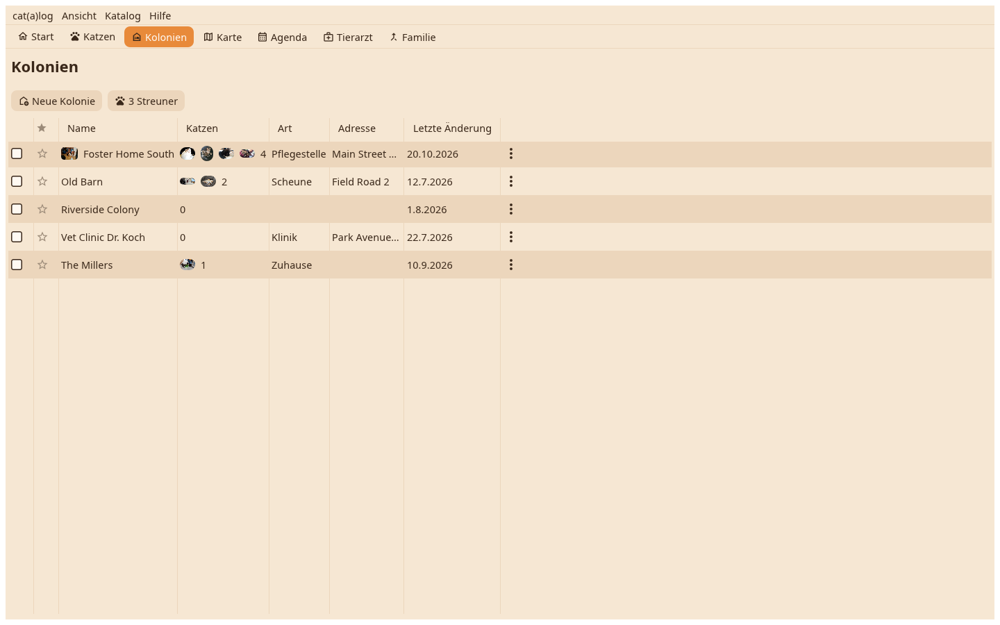

Jedes Zuhause in einer Tabelle mit seinen Gesichtern, seiner Zahl und seinem Status; ein Stern markiert einen Favoriten. Ein Klick und Enter legt die Karte des Zuhauses auf den Schreibtisch.

Name, die Gesichter der Katzen, die dort leben, wie viele, der Status, die verantwortliche Person. Streuner sind ein Knopf über der Tabelle. Neue Kolonie fragt nach einem Namen.
Die Karte zeigt das Titelbild, die Felder mit Werten, die Katzen mit ihren Gesichtern; ein Klick auf ein Gesicht legt diese Katze daneben, "Alle Tiere öffnen" legt jedes und ordnet sie nebeneinander. Das Titelbild kommt aus einer Datei oder durch Ablegen auf der Karte.
Öffnen, umbenennen, die Karte, die Zeitleiste, verstecken, zusammenführen, in einen anderen Katalog verschieben, löschen; dasselbe wie das ⋮ an der Zeile.